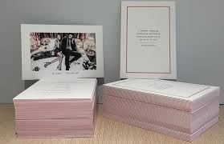

Kaartjes
Wat zijn Kaartjes?
Definitie
Kaartjes zijn veelzijdige drukwerkproducten die worden gebruikt voor verschillende doeleinden, zoals uitnodigingen, bedankkaartjes, visitekaartjes, en meer. Ze komen in diverse formaten en ontwerpen, afhankelijk van de specifieke behoefte en gelegenheid.
Voordelen van Kaartjes
- Veelzijdigheid: Kaartjes kunnen worden aangepast aan verschillende gelegenheden en doeleinden, van persoonlijk gebruik tot professioneel.
- Personalisatie: Ze bieden talrijke mogelijkheden voor personalisatie, zoals het toevoegen van namen, logo's, en speciale boodschappen.
- Professionele Uitstraling: Goed ontworpen kaartjes zorgen voor een professionele en verzorgde indruk, wat belangrijk is voor bijvoorbeeld visitekaartjes.
Toepassingen van Kaartjes
Kaartjes worden vaak gebruikt voor:
- Uitnodigingen: Voor bruiloften, feesten, en andere evenementen.
- Visitekaartjes: Om contactgegevens professioneel te presenteren.
- Bedankkaartjes: Voor het tonen van dankbaarheid na evenementen of voor ontvangen geschenken.
- Wenskaartjes: Voor persoonlijke berichten bij feestdagen of speciale gelegenheden.
Hoe Werkt het Ontwerpen van Kaartjes?
Het ontwerpen van kaartjes begint met het kiezen van het juiste formaat en het papier. Vervolgens wordt het ontwerp opgesteld, waarbij de boodschap, afbeeldingen, en eventuele personalisaties centraal staan. Kaartjes kunnen worden gedrukt op diverse soorten papier, zoals mat, glanzend, of gerecycled papier, en kunnen extra afwerkingen hebben zoals reliëfdruk, foliedruk, of spot-UV.
Belangrijke Overwegingen bij het Ontwerpen van Kaartjes
- Formaat en Papierkeuze: Kies een formaat en papier dat past bij de gelegenheid en het doel van het kaartje.Ontwerp en Layout: Zorg voor een aantrekkelijk en duidelijk ontwerp dat de boodschap goed overbrengt.
- Afwerking: Overweeg speciale afwerkingen voor een extra luxe uitstraling, zoals reliëfdruk of foliedruk.